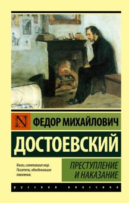

В начале июля, в чрезвычайно жаркое время, под вечер, один молодой человек вышел из своей каморки, которую нанимал от жильцов в С — м переулке, на улицу и медленно, как бы в нерешимости, отправился к К — ну мосту.
Он благополучно избегнул встречи с своею хозяйкой на лестнице. Каморка его приходилась под самою кровлей высокого пятиэтажного дома и походила более на шкаф, чем на квартиру. Квартирная же хозяйка его, у которой он нанимал эту каморку с обедом и прислугой, помещалась одною лестницей ниже, в отдельной квартире, и каждый раз, при выходе на улицу, ему непременно надо было проходить мимо хозяйкиной кухни, почти всегда настежь отворенной на лестницу. И каждый раз молодой человек, проходя мимо, чувствовал какое-то болезненное и трусливое ощущение, которого стыдился и от которого морщился. Он был должен кругом хозяйке и боялся с нею встретиться.
Впрочем, на этот раз страх встречи с своею кредиторшей даже его самого поразил по выходе на улицу.
«На какое дело хочу покуситься и в то же время каких пустяков боюсь! — подумал он с странною улыбкой. — Гм... да... всё в руках человека, и всё-то он мимо носу проносит, единственно от одной трусости... это уж аксиома... Любопытно, чего люди больше всего боятся? Нового шага, нового собственного слова они всего больше боятся... А впрочем, я слишком много болтаю. Оттого и ничего не делаю, что болтаю. Пожалуй, впрочем, и так: оттого болтаю, что ничего не делаю. Это я в этот последний месяц выучился болтать, лежа по целым суткам в углу и думая... о царе Горохе. Ну зачем я теперь иду? Разве я способен на это? Разве это серьезно? Совсем не серьезно. Так, ради фантазии сам себя тешу; игрушки! Да, пожалуй что и игрушки!»
На улице жара стояла страшная, к тому же духота, толкотня, всюду известка, леса, кирпич, пыль и та особенная летняя вонь, столь известная каждому петербуржцу, не имеющему возможности нанять дачу, — всё это разом неприятно потрясло и без того уже расстроенные нервы юноши. Нестерпимая же вонь из распивочных, которых в этой части города особенное множество, и пьяные, поминутно попадавшиеся, несмотря на буднее время, довершили отвратительный и грустный колорит картины. Чувство глубочайшего омерзения мелькнуло на миг в тонких чертах молодого человека. Кстати, он был замечательно хорош собою, с прекрасными темными глазами, темно-рус, ростом выше среднего, тонок и строен. Но скоро он впал как бы в глубокую задумчивость, даже, вернее сказать, как бы в какое-то забытье, и пошел, уже не замечая окружающего, да и не желая его замечать. Изредка только бормотал он что-то про себя, от своей привычки к монологам, в которой он сейчас сам себе признался. В эту же минуту он и сам сознавал, что мысли его порою мешаются и что он очень слаб: второй день как уж он почти совсем ничего не ел.
Не ищите злого умысла там, где всё объяснимо глупостью |
||
КMnO4 и α2 ± β 2=r2 |
|
|
|
Текст, размещенный по ширине ячейки | |